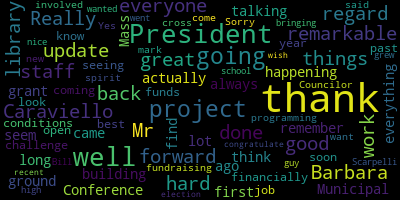

[Knight]: City Council 16th regular meeting April 20th, 2021 broadcast live on channel 22 Comcast the channel 43 Verizon pursuant to Governor Baker's March 12th, 2020 order suspending certain provisions of the open meeting lot. and the governor's March 15th, 2020 order imposing strict limitation on the number of people that may gather in one space. This meeting of the Medford City Council will be conducted via remote participation to the greatest extent possible. Specific information in the general guidelines for remote participation by members of the public and or parties with a right and or requirement to attend this meeting can be found on the Medford City website. For this meeting, members of the public who wish to listen or watch the meeting may do so by accessing the meeting link contained herein. No in-person attendance or members of the public will be permitted, but every effort will be made to ensure that the public can adequately access the proceedings in real time via technological means. In the event that we are unable to do so, despite best efforts, we will post on the city of Medford or community media website and audio or video recording transcript or other comprehensive record of the proceedings as soon as possible thereafter. Motions, orders and resolutions, paper number 21325, offered by President Caraviello. Be it resolved, the Medford City Council be presented a library update. Councilor Caraviello.
[Caraviello]: Thank you, Mr. President. Mr. President, before I give the update, I want to give a shout out to Barbara Kerr and her library staff. While other libraries have been closed or barely doing any work, last month our library circulated 19,562 books and other materials, which is the highest since we've moved into the warehouse space. And also, we've done 39 virtual programs with 600 people in attendance, 18 children's programs, 14 teen programs, and seven adult programs. And we've been doing this since November, while other libraries are just starting to do now. So Mr. President, I want to just give a shout out to Barbara. I think we are probably the most successful library in the Minute Man network. during this pandemic. I think Barbara's on the call. She might wanna say something before I get into where we are with the Henry Foundation.
[Kerr]: Thank you for letting me come. Do you need my name and stuff?
[Scarpelli]: Yes, Ms. Kerr, name and address for the record.
[Kerr]: It's Barbara Kerr, 35 Baker Place, Newton Lower Falls. We were very lucky. basement, for those of you who've been over to Boston Avenue, it's a very awkward space in the basement of an office building, but it turned out to be perfect for a pandemic because we are pretty much the only people on that floor. There is an exterior hallway, and we can leave materials for people to pick up on tables in the hallway, where most other libraries are having to do a whole you schedule a drop-off and you drive up to the front and they like throw books in your car and you drive away. And that is a very restricted volume where we basically, our volume is restricted by when we run out of plastic bags. So we have been averaging 16,000 items in physical items a month. I did some stats this morning and we've been doing that since we reopened in May. We started putting stuff out in the hallway at the end of May and we started doing appointments in August and computer appointments in November. And as Rick said, there are still a lot of libraries that are not doing any kind of appointment access and who are doing very limited pickup of materials. So, you know, it was an awkward place to land, but we were very lucky in the end. So, and I do have a very good group of people because doing direct public service has been pretty scary in the last year and they did it. They were very, we took a lot of precautions, but they've provided very good public service. And the children and teen programming folks realized that you could still do a craft program. You just had to put the supplies in a bag and put that in the hall and then have a Zoom and everybody does crafts together on the Zoom. And Zoom actually turned out to be a remarkably good platform for lectures. We had Robert Reich, who I forget who he was, but he was a, he's a, he's an economist or something. I don't know. We were, we were able to collaborate with six other libraries to have a program with him and they had 800 people on the Zoom. And I think the most we've ever had at a program is a hundred. So I think as we go forward, some of our programming will probably still be Zoom or a Zoom in-person hybrid because it's, you don't have to leave your house. So it works pretty well.
[Bears]: He's the former Secretary of Labor, Barbara.
[Kerr]: I knew he was that. I meant to look it up before I came on here and not display my ignorance. However, now I'm on tape displaying my ignorance. But my people have done a very good job. So it's been a challenge. But we were fortunate to land at Boston Avenue. Thank you. Are you going to talk about the building?
[Caraviello]: I will. I'll talk about the building, Barbara. Again, thank you, Barbara. That's great, almost 20,000 books on a library that's barely open. So, I just wanted to give everybody a little update. I think most of us have taken the tour of the building, I think a couple of weeks ago, and we're looking at sometime, I think, probably September opening, give or take a little bit.
[Kerr]: Probably by the end of September.
[Caraviello]: Hopefully by the end of September, have it open and everything seems to be gone. So I just want to give you a little brief update on the money raised by the foundation. So as of today, the foundation has total cash and pledges and gifts in the amount of $5,207,255. And we also have two in-kind pledges from both Cummings and East Cambridge Savings Bank. for their pledges, and East Cambridge and Bill Cummings also made donations on top of their in-kind pledges. So I thank them too for both that. And so at the moment, we have a grand total of commitments and gifts of $5,487,255. And what I'm told, I'm hearing there's another 100,000 coming from another donor, and we may see one more coming. But so far, We've, the cash we've taken in is $4,278,368. So we're just about all the money we raised is almost all here. So again, I want to thank the people on the commission that I work with for all their work on this. And we've also started a new campaign and I want to thank Ken Kraus and his wife Laura for taking the lead on this and Canada's White started the Green Campaign with a $25,000 donation. And I want to thank you for that. And the objective is to sell 111 solar panels that are to be underwritten. So as of today, the Green Campaign has already raised $58,000 and that's been pledged. So I just want to thank Canada's White but for the scientists and all the people who've donated so far up to this, and hopefully the cost from our city will be as little as possible. Thank you.
[Scarpelli]: I can. Chair recognizes Councilor Scarpelli. First, let me thank Councilor Caraviello, because I think that it was your leadership that started this journey and say what you want, it's too big, we don't need this, this, that, the other thing, this is truly gonna be a gem in our community. When you talk about gateways to our most important spots in our city, you're talking about driving it to Method Square and now seeing this unbelievable building that's gonna be open to our residents in so many various ways and truly being a true community community facility. So, um, Barbara, again, it takes a great leader to, to lead the way. And Barbara's, you know, the, the only knock is Barbara doesn't actually live in Medford. So we should actually find her a home, you know, maybe next door, you know, get her in here. And so she's just been amazing. And I think that her team's been amazing. And, uh, you know, like we said, especially during the toughest times during COVID and working for recreation, I know exactly what she's talking about. and how we can still provide a service to our constituents. And she did that. When you're talking about the volume of work that you've done over the most difficult times, I applaud her efforts. And so again, I know that, I know Councilor Caraviello keeps challenging us to pledge and get out there and help raise that money and lessen the burden to the taxpayers, but I appreciate all his work. his efforts, so thank you. Chair recognizes Councilor Falco.
[Falco]: Thank you, Mr. President. And thanks, thank you to President Caraviello for all your hard work on this project. I remember when you first came back from, I think it was the Mass Municipal Conference, talking about a grant for the library, and it didn't seem like it was that long ago, and here we are, where actually there's a building going up and it's in the ground, There are a lot of great things happening there. And thank you for all your hard work with regard to this project, with regard to everything else you do. And thank you for the update. It's always good to get an update to find out where we are financially with the funds coming in. And thank you to Barbara and her staff as well. They've done a remarkable job. and not under the best conditions. I know it's been a challenge the past year or so, and look forward to seeing the library open soon and all the good things and great programming that's going to come out of that. It's going to be remarkable when all is said and done. So thank you to Barbara and her staff. Thank you to President Caraviello, and thank you to everyone that was involved in the fundraising. to this new project that I can cross and mark back in any spirit as well. So thank you to everyone. Thanks.
[Scarpelli]: Chair recognizes Councilor Bears.
[Bears]: Thank you, Mr. President. I'm just so excited for this building to open. I am hopeful that by the fall, the schedules will line up and we'll be able to have an in-person event of some kind And hopefully it can be a celebration of community, not just coming out of this pandemic, but also coming together around this great community institution. So I'm just pumped. I can't wait to reserve a meeting room, take out a book. And I also just want to thank Barbara, the whole library staff, the library foundation, and the board of the library foundation. I think it's also an amazing testament to our community that we have raised so much money to support this. And I got an email from Ken as well around the green campaign. So I think that's just another community value, having solar panels on the building. So it really, this project just speaks to, I think, so many of the wonderful things about Medford and I'm excited for this fall. So thank you to everybody.
[Caraviello]: Chair recognizes Councilor Caraviello. Thank you, Mr. President. A big shell goes off very slow. Barry, you have people like me and other people on the commission, but I don't have the ability to reach out to the people that Barry did. And he gets a good part of the credit for this. With his name and reputation, he was able to go out there and make those calls that people like me just can't make or ever gonna make. So I wanna thank Barry personally for all the work that he's done in the community. The library is planning, hopefully, some type of celebration in October, possibly with a tent outside in the event that things don't go. But hopefully we'll be able to do an inside event. But there is some tentative plans through Mr. Bloomberg to put a tent outside the library in the parking lot and have some kind of celebration there. for the city for that weekend, for the official grand opening of the library. So, hopefully, the scope will ease up and we'll be able to actually get into the building and actually do things in it. So thank you.
[Scarpelli]: Chair recognizes Councilor Morell.
[Morell]: Thank you, Mr. President. I echo my council colleagues and just thanking Barbara Kerr, the library and the library foundation. The library on Boston Ave has been a lifeline for my family. So I thank you guys for what you've been able to do in that space in this time. It's been truly incredible. I just have one question, President Caraviello, for, I mean, you gave us the pledged amounts and the fundraise amounts. I'm just curious what the remaining amount is that isn't accounted for. I know we're still, I know donations are still coming in, but if that number is available.
[Caraviello]: I'm sorry, can you repeat that, Council Member Rowe?
[Morell]: Just the remaining amount that's not covered by donations and pledges, if we have that.
[Kerr]: We covered it. It was, we agreed to do 4 million. So we're a million above what the original fund was. Yep. Great.
[Scarpelli]: Thank you. Chair recognizes Mr. David Tedisco. Oh, he said he's all set. I'm all set.
[Falco]: Sorry about that.
[Scarpelli]: Sure. It's a motion.
[Bears]: Motion received in place on file.
[Scarpelli]: Motion of Councilor Scarpelli to receive in place on file, seconded by Councilor Falco, thirded by Councilor Bears. City Clerk, please call the roll. Councilor Bears. Yes. Councilor Falco. Yes. Councilor Marks. Councilor Morell. Yes. Councilor Scarpelli. Yes. President Caraviello.
[Falco]: Yes.
[Scarpelli]: Vice President Knight. Yes. Seven in the affirmative, zero in the negative. The motion passes. Council paper 21326 offered by Councilor Scarpelli being resolved. The Medford City Council congratulate Medford's own Bill Boyd on his recent victory to the New Hampshire State House of Representatives. Councilor Scarpelli. Thank you, Mr. President. William Boyd III, a close friend of most Medford residents. Bill and I grew up together. Bill was a graduate of Medford High School class of 1987. And then went on, I believe, to Boston College. And he's someone who loved the Mustangs and loved the Eagles just as strong. So it's so proud that he's made this move. And as a Method resident, grown up here, his dad's still here. His brother's still here. that Billy took the leap and did something very difficult, especially in this climate, and representing his constituents in Merrimack, New Hampshire. I just wanted to reach out and share the great news with a leader in the class of 1987, and now a leader in the state of New Hampshire. So I just wanted to wish him luck and congratulations. Thank you.
[Caraviello]: Mr. President. Councilor Marks.
[Marks]: Thank you, Mr. President. I want to thank Councilor Scarpelli for putting this on. The Boyd family has been a long established family in this community, giving back much to the city over many, many decades between Bill Boyd Sr. and Bill Boyd Jr. They are a tremendous family. I want to congratulate him on his seat to the New Hampshire State House. I believe they're only a part time legislative body, but still, Mr. President, it's great to see someone with his integrity, put their hat in the ring and run for public office. And I just want to congratulate him. Thank you. Councilor People.
[Falco]: Thank you, Mr. President. I also want to thank Councilor Scarpelli for bringing this forward. I grew up with Bill and went to high school with him as well. Really, really nice guy. And I just wanted to congratulate him and wish him well on his recent election. Thank you.
[Scarpelli]: Thank you. Councilor Knight. Vice President Knight. Mr. President, thank you very much. Congratulations to Mr. Boyd on his recent election. When you talk about the Boyd family here in Medford, you talk about a family that's really focused on service, whether that's military service or public service, the Boyd family has been willing to step up for the call. As Councilor Mack said, I do believe that the legislature in New Hampshire is a part-time legislature, but I also believe that it's an unpaid position, Mr. President. I want to just show you what type of person Bill Boyd is. It's about service and about helping people. and that's the type of guy he is. So with that being said, Mr. President, I thank Councilor Scott Paley for putting this matter on, and I endorse the proposal a whole lot. Thank you, Mr. Vice President. Clerk Herbies. Thank you, Mr. President. I'll jump in here as well, if anyone does. I never knew Bill Boyd when he lived in Medford, but he and I are fellow Eagles. We were BC classmates. I was a year behind him in college. He was a dear friend of mine in college. He remains a dear friend of mine today, and I congratulate him and wish him very well. I wish him the absolute best.
[Caraviello]: Thank you very much. Okay, as amended by Councilor Scarpelli for a Senate citation. On the motion by Councilor Scarpelli, seconded by Vice President Knight, as amended by Councilor Scarpelli to Senate citation. Mr. Clerk, please call the roll.
[Scarpelli]: Councilor Bears. Yes. Councilor Falco. Yes. Vice President Knight. Councilor Marks. Yes. Yes. Councilor Scarpelli? Yes. President Caraviello?
[Caraviello]: Yes, seven in the affirmative, motion passes. 2-1, 3-2-7, offered by Councilor Marks. Be it resolved that the Verizon 5G rollout be discussed. Councilor Marks?
[Marks]: Thank you, Mr. President. I had the opportunity to attend the third and final public hearing on April 14th of the Ad Hoc Small Cell Committee. They took, total of 44 applications that were submitted by Verizon in over a three-day hearing. They adjudicated all 44, Mr. President. It wasn't until the April 14th meeting, after listening to resident concerns in the Hillside, Method Square area, and in South Method, that we finally were able to get a denial from the Small Ad Hoc Cell Committee. And the denial was based on two particular Method residents who, in my opinion, did their homework and did their due diligence and presented the Small Ad Hoc Cell Committee with a number of issues and concerns. and the two sisters, in my opinion, I believe, set forth denial standards now that can be followed by other Method residents if and when Verizon or any other vendor approaches the city for more applications. What was presented that night, Mr. President, by the two sisters and many of this document, much of the documentation has been presented to department heads here at City Hall, the city administration, members of the city council. But the, according to the denial reasons that were issued by the small ad hoc cell committee was the chairman, Chairman McGiven cited the interim policy 2-J, which is part of the mayor's interim policy. and 2-J states description as to why the desired location is superior to other similar locations from a community perspective, including visual aspects, proximity to residential dwellings, schools, parks, or playgrounds. So the chairman, in his denial statement, mentioned the interim policy 2-J. They also mentioned, Mr. President, which was brought up by the two sisters, Barbara Kendall and Marilyn Jordan, that they were concerned about the aesthetics of having this particular antenna within 20, 15, 20 feet of their windows in their homes. And they were concerned from an aesthetic standpoint. So that was the first thing they raised, Mr. President. The other thing was the proximity to their home and proximity to an open front porch where they sit. And right now, there are no setback guidelines that the committee follows. But apparently, if residents raise concerns of the proximity to their home, and the proximity to where they sit, whether it's an open front porch, whether it's stairs, you may sit in your stairs like I do. You may sit in a chair in front of your house. So those two, three items, aesthetics, proximity to home, proximity to open front porch were mentioned. The neighbors also suggested suitable other locations. So Barbara and her sister Marilyn said, what about this location? What about this pole? What about that pole? And they listed a number of surrounding poles in the area. And I think that falls in line with the policy 2-J, which mentions are there other similar superior locations? And at the time, Verizon said that they couldn't locate any other locations. However, the board did not see fit and ruled for denial. The two sisters also presented a petition from area residents saying that area residents were also opposed that lived on Sheridan to installing a 5G antenna at that particular location. So based on these particular denial reasons, the five that I just mentioned, aesthetics, proximity to home, front porch, suggestions of other suitable locations, and the presentation of a petition. It doesn't have to be an act of Congress. We, the undersigned, do not support 5G antenna on Expo. That's all it takes. I believe, Mr. President, this opens up the door for other residents down the line to offer the same other standards, the same other criteria, Mr. President, why they don't want it in front of their home. And from my sitting on probably 10 to 12 hours of public hearing for that committee, I heard not only these two particular sisters, but a dozen other people mentioned very similar reasons over and over again. And the only one that got denied was this particular petition. And there was another petition, I believe there were two of them, based on clearance, ADA compliant clearance. You need 36 inches in width, And we were told that all the polls were pre-examined by the city to make sure they were ADA compliant. And come to find out, maybe we missed a couple of polls, or maybe that review was still in process. But indeed, that wasn't the case, Mr. President. So I just want to put that out there. This issue is not going away, and I think every resident, Mr. President, should be aware if this is something that they eventually receive a notice saying we're going to have a 5G in front of your house, this is the way, in my opinion, that you can combat that. I offered the suggestion last week, Mr. President, and it was ironic to hear the chairman of the committee state that when these two sisters brought up a concern about their property value potentially being reduced because of having 5G in front of their home, the chairman immediately stated, well, he doesn't want to dispute that. However, he believes it could be the opposite, that people in the community want the 5G, want the additional access, and that's precisely what this council voted unanimously last week, saying, let's reach out to the general public, find out who's interested, and if they wish to have 5G, let's make it happen. So I'm glad to hear at least the chairman recognized there may be a better approach to this whole process. then we're currently undertaking right now. So I just want them to put that out. There were no formal motions tonight, Mr. President. This was just for the edification of people in the community and possibly how, when, if and when they are presented with this means that they have to arm themselves and be informed on how to fight back, Mr. President. Thank you.
[Caraviello]: Thank you, Councilor Marks. And I for one, first of all, I want to thank Councilor Marks really taking the lead on this. I mean, I was, I sat up there in those hours of meeting with him and he was, I gotta give him credit. He was on top of everything. And I say, again, I as one council, I want to thank him for taking the lead on this and really leading the chat. So again, Councilor Markson, thank you very much for me. All right, on the motion by Councilor Markson to receive a place on file. Second by Councilor Scarpelli. Mr. Clerk, please call the roll.
[Scarpelli]: Councilor Bears. Yes. Councilor Falco. Yes. Vice President Knight. Councilor Marks. Yes. Councilor Morell. Yes. Councilor Scarpelli. Yes. President Caraviello.
[Caraviello]: Yes. Seven in favor, the motion passes. Two, one, three, two, eight. Offered by Councilor Bears, be it resolved. by the Medford City Council that the city clerk and the city solicitor study the steps needed to allow domestic partnerships in Medford and report back to the council. Councilor Bears.
[Bears]: Thank you, Mr. President. I put this forward after seeing a request from a resident last week. They were looking to enter a domestic partnership. Medford currently doesn't offer that option. Some of our neighboring communities, Boston, Somerville, and others around the state do allow domestic partnerships. I put this forward to ask the solicitor and the clerk what steps would be needed to undertake that. And some of the reasons behind that, I mean, I generally don't wanna judge people for what relationship form they wanna enter, but there are some people who may not want to get married, but do wanna have their partnership recognized by their municipality. So that was my intent putting this forward to ask the clerk and the solicitor what the process would be to enable that action.
[Caraviello]: Thank you. A motion by Councilor Bears, seconded by Vice President May. Mr. Clerk, please call the roll.
[Marks]: Mr. President, if I could. Councilor Marks. I just have a question. This may not be to Councilor Bears, but maybe to the city solicitor. What defines domestic partnership?
[Caraviello]: You wanna make that as a form of amendment? I would, yes. Okay. On the motion by Councilor Bears, seconded by Vice President Knight, as amended by Councilor Marks.
[Scarpelli]: On that question, Mr. President, I have done some research on this. Vice President Knight. On the Councilor Marks question, I have done some research on the topic, just for point of information. I think some of the criteria include sharing of living expenses, the individual responsibility for the wellbeing of the other partner's dependents, Um, they'd be capable of entering into a contract. Um, and, uh, they're not within a partnership with somebody else. And what I can tell, uh, has been some of the criteria that I've been able to dig out of these statutes. Thank you, Mr. Vice President.
[Caraviello]: Okay, on to the motion. Mr. Clerk, please call the roll. As amended by, uh, uh, by Councilor Marks.
[Scarpelli]: Councilor Bears? Yes. Councilor Falco? Yes. Vice President Knight? Councilor Marks? Yes. Yes. Councilor Scarpelli?
[Caraviello]: Yes. President Caraviello? Yes, 7 in favor of the motion passes. 2-1-3-2-9, offered by Councilor Bez. Be it resolved that the Medford City Council, that the administration provide revenue projections for fiscal year 2022, fiscal year 2023, fiscal year 2024, fiscal year 2025, and fiscal year 2026. Councilor Bez. Thank you, Mr. President. The reason I put this forward is that those are the
[Bears]: forward facing fiscal years under which the city would be able to expend funds allocated by the American Rescue Plan Act. I think it's important for us in this year's budget to understand to the best of the administration's ability what revenue will look like within those fiscal years so that we can understand what their proposal may be for spending those funds and how they may expect to spend them over a longer period of time. I think it's very important that we use those funds to maintain city services and restore in some cases city services and school services. And I think it would help us in our deliberations to understand the long term outlook for city revenue. Thank you.
[Scarpelli]: Thank you. I suppose tonight, we're going to submit the paper to ask the administration also provide a breakdown as to whether or not there any restrictions as to where these funds can be spent. you.
[Bears]: And to Councilor Knight's point, if I may, Mr. President, the Mass Municipal Association is hosting a webinar on that specific topic. I believe it is not. I can't find it right now, but it's this week. It is tomorrow at 10 a.m. So I'm planning on attending that.
[Scarpelli]: I hope the mayor's office goes so they can answer our questions.
[Caraviello]: Thank you. Okay, on the motion by Councilor Bears, as amended by Councilor Knight, seconded by Councilor Falco. Mr. Clerk, please call the roll.
[Scarpelli]: Councilor Bears? Yes. Councilor Falco? Yes. Vice President Knight? Yes. Councilor Marks? Yes. Councilor Morell?
[Kerr]: Yes.
[Scarpelli]: Yes.
[Caraviello]: Yes, seven in the affirmative, motion passes. But public participation, we have anybody that wants to speak in public participation?
[Scarpelli]: Mr. President, I know if we don't have anybody, I know that I did, I was a constituent did reach out via email asking the city administration a question. There's no one here would like to ask that question. Okay. Councilor Scott has a question on the public participation through a constituent that the constituent is asking that the POW flag that should be flying in front of the City Hall isn't there. I haven't noticed it, but if it isn't, could we get the report live? Thank you. Thank you, Councilor Scapello.
[Bears]: Mr. President, if I may. Councilor Best. We also received a message from a resident to the city administration asking if there was going to be a formal response to the globe report of an attack, an anti Asian attack in the city. So I would just like that reflected as well that a resident did reach out to us about that. Thank you. Okay.
[Scarpelli]: Mr. President, a resident reached out to me about a pothole, but I'll take care of that. I don't need that in the record.
[Caraviello]: Um, records will come past the council of this.
[Bears]: Mr. President, I would like to table the records for one week.
[Caraviello]: The motion by Councilor Bears, to table the records for one week. Seconded by Councilor Scarpelli. Mr. Clerk, please call the roll.
[Scarpelli]: Councilor Bears. Yes. Councilor Caput. Yes. Vice President Knight. Yes. Councilor Marks. Yes. Councilor Morell. Yes. Councilor Scarpelli. Yes. President Caraviello.
[Caraviello]: Yes, seven years affirmative, motion passes. Motion to adjourn by Vice President Knight, seconded by Councilor Scarpelli. Mr. Clerk, please call the roll.
[Scarpelli]: Councilor Bears.
[Bears]: Yes.
[Scarpelli]: Councilor Tocco. Yes. Vice President Knight. Yes. Councilor Marks. Yes. Councilor Morell. Yes. Councilor Kelly. Yes.
[Caraviello]: Motion passes. Meeting adjourned.
|
total time: 1.23 minutes total words: 234 |
total time: 7.83 minutes total words: 1163 |
total time: 7.24 minutes total words: 1129 |
total time: 3.51 minutes total words: 572 |
|
total time: 1.56 minutes total words: 289  |
total time: 0.58 minutes total words: 118 |
total time: 8.69 minutes total words: 1137 |
|
{kind=link}
{kind=link}
{kind=link}
{kind=link}
{kind=link}
{kind=link}
{kind=link}